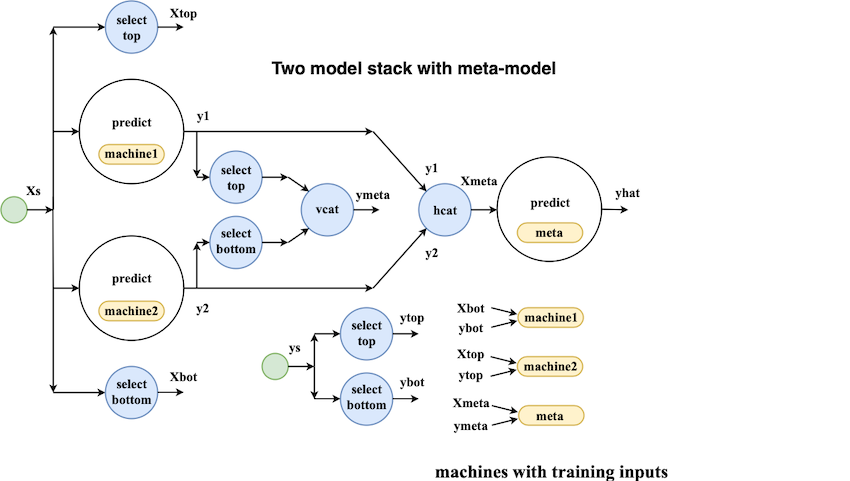

This post is quite old. For a newer overview of the design of MLJ, see here
Beyond machine learning pipelines with MLJ
Anthony Blaom, Diego Arenas, Franz Kiraly, Yiannis Simillides, Sebastian Vollmer
May 1st, 2019. Blog post also posted on the Julia Language Blog
 |  |
|---|---|
 |  |
Introducing MLJ
MLJ is an open-source machine learning toolbox written in pure Julia. It provides a uniform interface for interacting with supervised and unsupervised learning models currently scattered in different Julia packages.
Building on a earlier proof-of-concept, development began in earnest at The Alan Turing Institute in December 2018. In a short time interest grew and the project is now the Institute's most starred software repository.
After outlining MLJ's current functionality, this post introduces MLJ learning networks, a super-charged pipelining feature for model composition.
Quick links:
Video from London Julia User Group meetup in March 2019 (skip to demo at 21'39)
Implementing the MLJ interface for a new model
How to contribute
Julia Slack channel: #mlj.
Star'ing us to show support for MLJ would be greatly appreciated!
MLJ features
MLJ already has substantial functionality:
Learning networks. Flexible model composition beyond traditional pipelines (more on this below).
Automatic tuning. Automated tuning of hyperparameters, including composite models. Tuning implemented as a model wrapper for composition with other meta-algorithms.
Homogeneous model ensembling.
Registry for model metadata. Metadata available without loading model code. Basis of a "task" interface and facilitates model composition.
Task interface. Automatically match models to specified learning tasks, to streamline benchmarking and model selection.
Clean probabilistic API. Improves support for Bayesian statistics and probabilistic graphical models.
Data container agnostic. Present and manipulate data in your favorite Tables.jl format.
Universal adoption of categorical data types. Enables model implementations to properly account for classes seen in training but not in evaluation.
Enhancements planned for the near future include integration of Flux.jl deep learning models, and gradient descent tuning of continuous hyperparameters using automatic differentiation.
While a relatively small number of machine learning models currently implement the MLJ interface, work in progress aims to wrap models supported by the popular python framework, scikit-learn, as a temporary expedient. For a comparison of the MLJ's design with the Julia wrap ScitLearn.jl, see this FAQ.
Learning networks
MLJ's model composition interface is flexible enough to implement, for example, the model stacks popular in data science competitions. To treat examples of this kind, the interface design must account for the fact that information flow in prediction and training modes is different. This can be seen from the following schematic of a simple two-model stack, viewed as a network:

Building a simple network
In MLJ, networks of models are built using a declarative syntax already familiar from basic use of the package. For example, the ordinary syntax for training a decision tree in MLJ, after one-hot encoding the categorical features, looks like this:
using MLJ
@load DecisionTreeRegressor
# load some data:
task = load_reduced_ames();
X, y = task();
# one-hot encode the inputs, X:
hot_model = OneHotEncoder()
hot = machine(hot_model, X)
fit!(hot)
Xt = transform(hot, X)
# fit a decision tree to the transformed data:
tree_model = DecisionTreeRegressor()
tree = machine(tree_model, Xt, y)
fit!(tree, rows = 1:1300)Note that a model in MLJ is just a struct containing hyperparameters. Wrapping a model in data delivers a machine struct, which will additionally record the results of training.
Without a pipeline, each time we want to present new data for prediction we must first apply one-hot encoding:
Xnew = X[1301:1400,:];
Xnewt = transform(hot, Xnew);
yhat = predict(tree, Xnewt);
yhat[1:3]
3-element Array{Float64,1}:
223956.9999999999
320142.85714285733
161227.49999999994To build a pipeline one simply wraps the supplied data in source nodes and repeats similar declarations, omitting calls to fit!. The difference now is that each "variable" (e.g., Xt, yhat) is a node of our pipeline, instead of concrete data:
Xs = source(X)
ys = source(y)
hot = machine(hot_model, Xs)
Xt = transform(hot, Xs);
tree = machine(tree_model, Xt, ys)
yhat = predict(tree, Xt)If we like, we can think of a node as dynamic data - "data" because it can be called (indexed) on rows, but "dynamic" because the result depends on the outcome of training events, which in turn depend on hyperparameter values. For example, after fitting the completed pipeline, we can make new predictions like this:
fit!(yhat, rows=1:1300)
[ Info: Training NodalMachine @ 1…51.
[ Info: Spawned 1300 sub-features to one-hot encode feature :Neighborhood.
[ Info: Spawned 1300 sub-features to one-hot encode feature :MSSubClass.
[ Info: Training NodalMachine @ 1…17.
Node @ 1…79 = predict(1…17, transform(1…51, 1…07))
yhat(rows=1301:1302) # to predict on rows of source node
yhat(Xnew) # to predict on new data
156-element Array{Float64,1}:
223956.9999999999
320142.85714285733
...Exporting and retraining
Once a pipeline like this has been built and tested on sample data, it can be exported as a stand-alone model, ready to be trained on any dataset. For details, see the MLJ documentation. In the future, Julia macros will allow common architectures (e.g., linear pipelines) to be built in a couple of lines.
Finally, we mention that MLJ learning networks, and their exported counterparts, are "smart" in the sense that changing a hyperparameter does not trigger retraining of component models upstream of the change:
tree_model.max_depth = 4
fit!(yhat, rows=1:1300)
[ Info: Not retraining NodalMachine @ 1…51. It is up-to-date.
[ Info: Updating NodalMachine @ 1…17.
Node @ 1…79 = predict(1…17, transform(1…51, 1…07))Just "Write the math!"
Because of Julia's generic programming features, any kind of operation you would normally apply to data (arithmetic, row selection, column concatenation, etc) can be overloaded to work with nodes. In this way, MLJ's network-building syntax is economical, intuitive and easy to read. In this respect we have been inspired by On Machine Learning and Programming Languages.
Invitation to the community
We now invite the community to try out our newly registered packages, MLJalongside MLJModels, and provide any feedback or suggestions you may have going forward. We are also particularly interested in hearing how you would use our package, and what features it may be lacking.